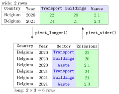

Pivoting Between Wide and Long Data¶
Definition¶
The same data can be stored in two shapes. In wide format repeated measurements sit side by side in several columns, for example one column per emission sector. In long format they are stacked in rows: one column says which measurement it is (Sector) and one column holds the value (Emissions).
The tidyr package converts between the two:
long <- wide %>% pivot_longer(cols = Transport:Waste,
names_to = "Sector", values_to = "Emissions")
wide <- long %>% pivot_wider(names_from = Sector, values_from = Emissions)
In pivot_longer(), cols lists the columns to stack, names_to names the new column that receives their old names, and values_to names the new column that receives their values. In pivot_wider(), names_from is the column whose distinct values become the new column names and values_from the column that fills them; all other columns identify the rows of the result.
Interpretation¶
Pivoting changes the layout of a table, not its content: every number in the wide table appears exactly once in the long table, and the two pivots undo each other. What changes is which question is easy to ask.

In the figure, the two Belgian rows of the wide table have three sector columns. pivot_longer() moves the three column names into the new column Sector (blue) and the six numbers into Emissions (green), so 2 rows become rows. Reading the arrow backwards, pivot_wider() takes the values of Sector as column names again.
A table is called tidy when every variable is a column, every observation a row and every value a cell. Which shape is tidy depends on what counts as an observation. For "total emissions per sector" the observation is a country–year–sector combination, so the long table is tidy and a single grouped summary by Sector answers the question; in the wide table the same total needs a separate sum for every column. For plots, long data lets ggplot2 map the Sector column to colour. Wide data is easier for side-by-side comparison, such as one column per year in a report table.
The common mistake with pivot_wider() is to leave extra columns in the table. Every column that is not names_from or values_from is used to identify the rows, so a leftover column that differs from row to row prevents the rows from being combined, and the result is full of NA (Example 4). Selecting the identifying columns first, as in select(Country, Year, Total), avoids this.
Key Results¶
pivot_longer()stacking columns turns a table with rows into one with rows (fewer only ifvalues_drop_na = TRUEis set).pivot_wider()creates one column per distinct value ofnames_from; its rows are the distinct combinations of all remaining columns, and missing combinations getNA.pivot_longer()followed bypivot_wider()(or the other way round) recovers the original information, possibly with a different column or row order.colsaccepts names (Transport:Waste), positions (4:11) or selection helpers, just likeselect().names_prefix = "Year_"inpivot_wider()gives column names such asYear_2020instead of the awkward name2020, which must be written with backticks.- If a combination of identifying columns and
names_fromoccurs more than once,pivot_wider()cannot place a single value and warns that the output contains list-columns.
Examples¶
All examples use this small made-up extract of an emissions table in wide format:
library(tidyverse)
co2 <- tibble(
Country = c("Belgium", "Belgium", "Germany", "Germany", "Netherlands", "Netherlands"),
Year = c(2020, 2021, 2020, 2021, 2020, 2021),
Transport = c(22, 24, 146, 148, 30, 31),
Buildings = c(20, 21, 110, 115, 25, 24),
Waste = c(2.1, 2.3, 10.4, 9.8, 4.2, NA)
)
1. Wide to long.
co2_long <- co2 %>%
pivot_longer(cols = Transport:Waste, names_to = "Sector", values_to = "Emissions")
nrow(co2_long)
#> [1] 18
head(co2_long)
#> # A tibble: 6 × 4
#> Country Year Sector Emissions
#> <chr> <dbl> <chr> <dbl>
#> 1 Belgium 2020 Transport 22
#> 2 Belgium 2020 Buildings 20
#> 3 Belgium 2020 Waste 2.1
#> 4 Belgium 2021 Transport 24
#> 5 Belgium 2021 Buildings 21
#> 6 Belgium 2021 Waste 2.3
Six country–year rows times three sectors give 18 rows; each row is now one country–year–sector observation.
2. A summary that is easy in long format. Total emissions per sector over all countries and years:
co2_long %>%
group_by(Sector) %>%
summarise(Total = sum(Emissions, na.rm = TRUE)) %>%
ungroup()
#> # A tibble: 3 × 2
#> Sector Total
#> <chr> <dbl>
#> 1 Buildings 315
#> 2 Transport 401
#> 3 Waste 28.8
The same code works unchanged for eight sectors or eighty.
3. Long to wide. First the total per country and year, then one column per year:
co2_total <- co2_long %>%
group_by(Country, Year) %>%
summarise(Total = sum(Emissions, na.rm = TRUE)) %>%
ungroup()
#> `summarise()` has grouped output by 'Country'. You can override using the
#> `.groups` argument.
co2_total %>%
select(Country, Year, Total) %>%
pivot_wider(names_from = Year, values_from = Total, names_prefix = "Year_")
#> # A tibble: 3 × 3
#> Country Year_2020 Year_2021
#> <chr> <dbl> <dbl>
#> 1 Belgium 44.1 47.3
#> 2 Germany 266. 273.
#> 3 Netherlands 59.2 55
The Netherlands value for 2021, , leaves out the missing waste value; na.rm = TRUE makes the sum possible but not complete.
4. Pitfall: extra columns in pivot_wider(). Here the sector columns are still in the table when the yearly totals are spread out:
co2 %>%
mutate(Total = Transport + Buildings) %>%
pivot_wider(names_from = Year, values_from = Total, names_prefix = "Year_") %>%
select(Country, Transport, Year_2020, Year_2021)
#> # A tibble: 6 × 4
#> Country Transport Year_2020 Year_2021
#> <chr> <dbl> <dbl> <dbl>
#> 1 Belgium 22 42 NA
#> 2 Belgium 24 NA 45
#> 3 Germany 146 256 NA
#> 4 Germany 148 NA 263
#> 5 Netherlands 30 55 NA
#> 6 Netherlands 31 NA 55
Because Transport, Buildings and Waste differ between the two years, each row is its own combination of identifying columns and nothing is merged: six rows, half of the cells NA, instead of three complete rows. Selecting Country, Year and Total before the pivot fixes it.
Prerequisites¶
Related Concepts¶
Sources¶
- Programming for EOR · Week 4
- Lecture 4 script, Data Wrangling with the tidyverse & Visualisation with ggplot2: Reshaping Data with tidyr; Week 4 solutions, exercises 6, 7 and 9
Aliases: pivot_longer(), pivot_wider(), tidyr, wide format, long format, tidy data, reshaping data, wide to long, long to wide Keywords: pivot_longer(), pivot_wider(), wide and long format, tidy data
Last updated: 10 November 2026 16:43
Pivoting Between Wide and Long DataTibbleCore dplyr VerbsGrouped SummariesRelational Joinsggplot2 and the Grammar of GraphicsData FrameMissing Values